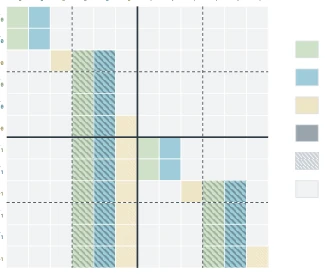
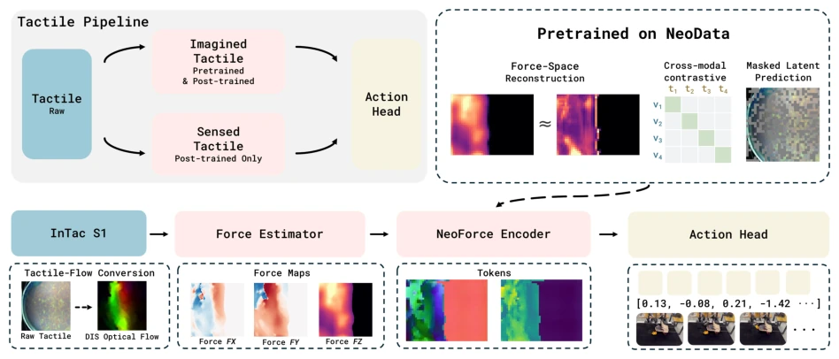
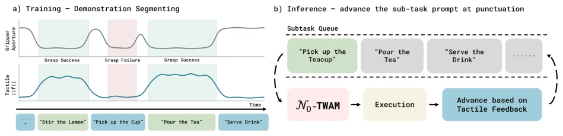
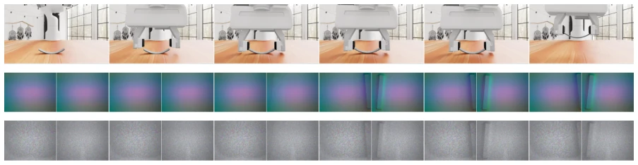
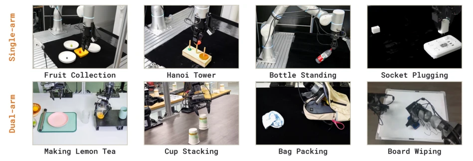
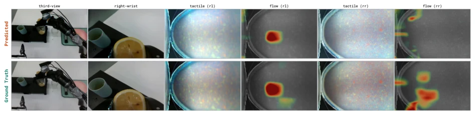
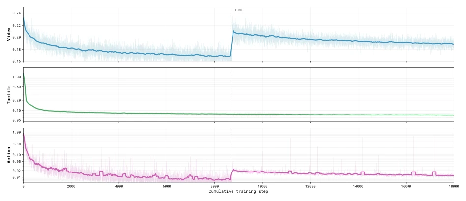

Figure 1 Overview. N0-TWAM is pre-trained on large-scale self-collected real-robot manipulation data with synchro- nized per-finger tactile streams. An MoT with three per-modality experts (video, tactile, and action) predicts the future vision and tactile, then predicts the action from them, so touch is both predicted (a predicted future) and observed (an observed present). Across contact-rich benchmarks in simulation and on real robots, N0-TWAM outper- forms prior world-action and vision-language-action baselines.
Figure 2 Overview of N0-TWAM. Multi-view RGB and tactile streams are encoded into latent tokens and processed by three per-modality experts (video, tactile, action) that interact only through a single shared self-attention at every layer, ordered by the frame-id causal cascade: the video and tactile experts co-generate the predicted future scene and future contact, and the action expert denoises the action chunk conditioned on the just-predicted pair. The language instruction enters the video and action experts through cross-attention, but not the tactile expert. A lightweight observed pathway (right) encodes the observed current tactile and cross-attends into the action tokens before the action head (§2.2); the denoised actions are decoded and executed.

Figure3 Jointself-attentionmask over two chunks, with each V/T block schematically collapsing the two la- tent frames. Each token appears as a key twice, noisy (solid) and clean (hatched); rows are queries, columns keys, colored by the key’s modality. Within a chunk the noisy video and tactile co-generate with each other, and the noisy action additionally attends to their clean copies; each new chunk attends to the whole clean his- tory, and no token ever attends a future chunk.

Figure 4 The two tactile pathways. Touch enters N0-TWAM in two ways. As a predicted signal, it is generated in the VAE latent space shared with video and denoised by the tactile expert as a foresight target. As an observed signal, it is read in force space: a frozen estimator gθ maps the raw tactile image to a three-axis force map [fx, fy, fz] →a NeoForce [56] tactile encoder (warm-started, fine-tuned) produces representation tokens →cross-attended into the action stream through the zero-initialized port of Eq. (7). An optional reconstruction term anchors the fine-tuned representation to the force field.

Figure 5 Tactile-punctuated long-horizon execution. (a) Training: a long-horizon demonstration, drawn as gripper aperture and tactile magnitude ∥f∥over time, is segmented at contact events into sub-task clips. The tactile trace also reports whether each grasp succeeds: a gripper can close without loading any force, so a failed grasp shows an aperture dip but no tactile rise, and the one signal that delimits sub-tasks also confirms them. Each clip is labeled with a short instruction (“Pick up the Cup”, “Pour the Tea”, …) and post-trained through the existing text pathway. (b) Inference: a lightweight scheduler holds the sub-task queue; N0-TWAM runs on the current sub-task prompt and executes it, and when tactile feedback signals the sub-task is complete the scheduler advances to the next pr
Figure 6 Qualitative simulation rollout (Insert Hole): the model’s predicted future (top) against the ground-truth rollout (bottom). In each block the multi-view RGB scene sits above its tactile stream; the predicted scene and contact track the real execution across the insertion.

Figure 10 Two renderings of the same tactile stream. One observed rollout: the top row is the RGB scene, shared by both renderings; below it the same contact appears as the simulator’s smooth clean field and as our gel-rendered rendering, a silvery, speckled gel with grain noise and depth shading that matches the look of a real vision-based sensor. Only the tactile rendering differs.
其他图片Other Figures

Figure 8 The real-robot task suite. Eight contact-rich tasks on two embodiments: four single-arm tasks on a Flexiv (top row) and four dual-arm tasks on a PiPER (bottom row). Six of the eight are drawn from NeoReal [56].

Figure 11 Predicting future touch (lemon-tea grasp). Top row: the model’s predicted future; bottom row: the ground truth. From left to right, the third-person and right-wrist RGB views, then the tactile image and the contact-flow map for each of the two gripper fingers (rl, rr). The predicted tactile and flow match the observed sensor, so foresight extends to contact, not only to the visual scene.

Figure 12 Per-modality pre-training loss (first 18k steps). Video, action, and tactile flow-matching losses of the MoT backbone; the +UMI marker is where the hand-collected UMI data is mixed in. The video loss rises and converges higher afterward, while the tactile loss is essentially unchanged.